Варианты фото для защиты
Напиши номер: например «экран 6: 4, последний: М2».
Экран 6 «Эффект в декабре»
Сейчас там «Вы выиграли тендер», та же сцена, что на экране 1. Кадры из ролика:
1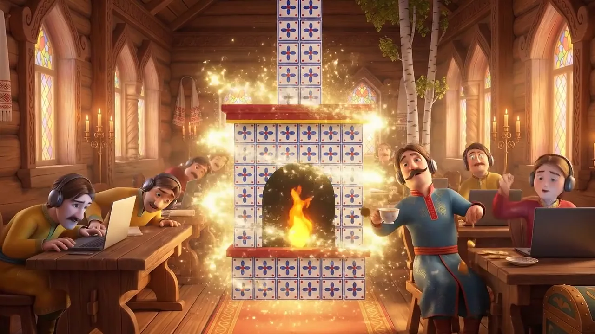
Печь сияет, отдел оживился · 90 с2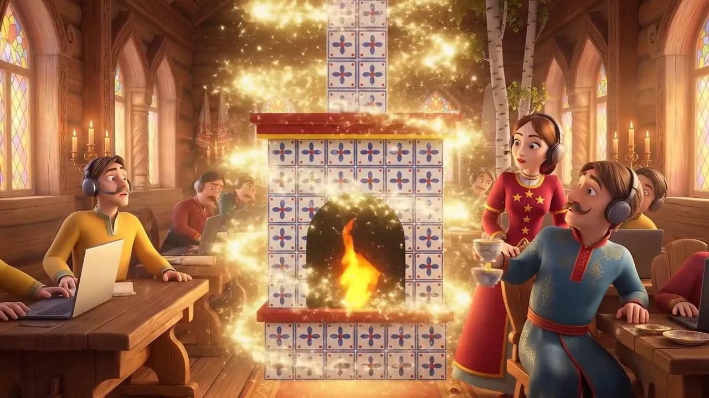
Печь в искрах, менеджеры радуются · 92 с3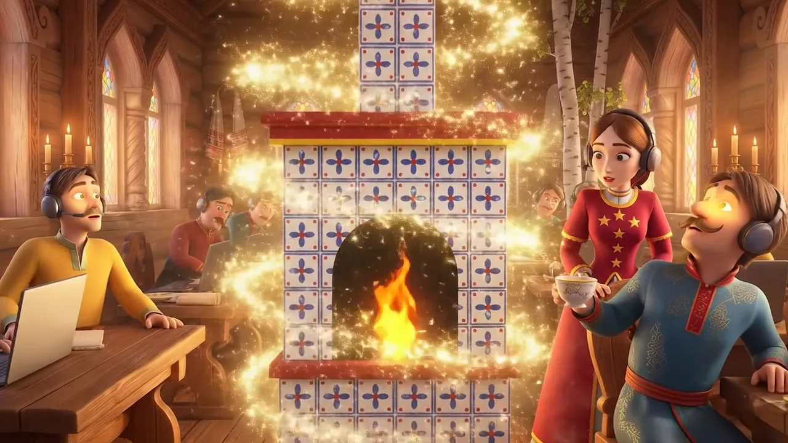
Крупно: менеджер с чаем у печи · 94 с4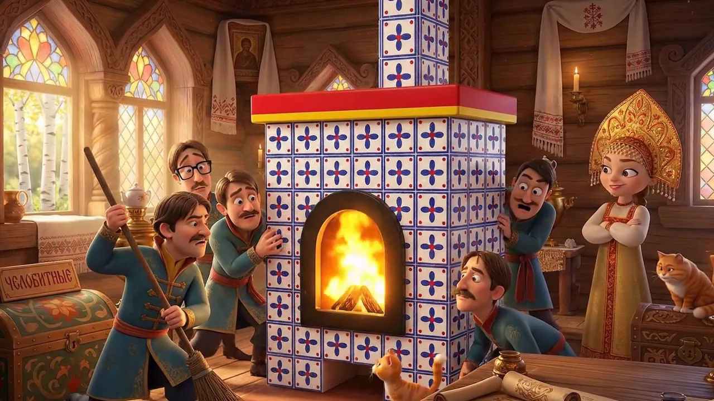
Отдел танцует у печи · 104 с5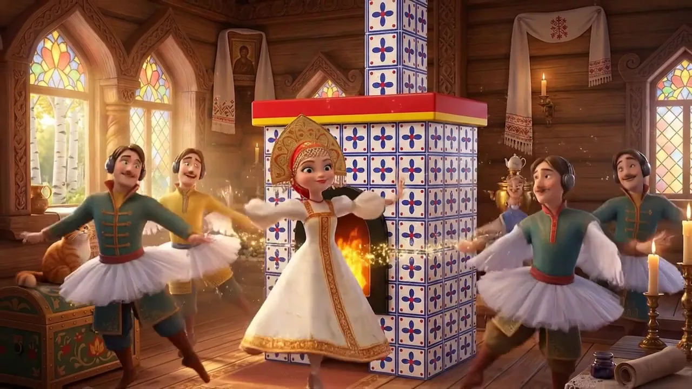
Марья кружится, вокруг искры · 107 с6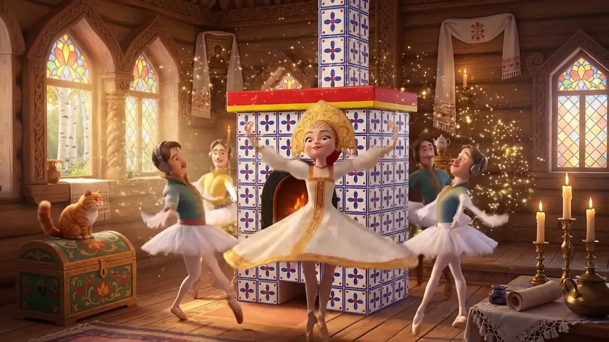
Танец с печью, общий план · 110 с7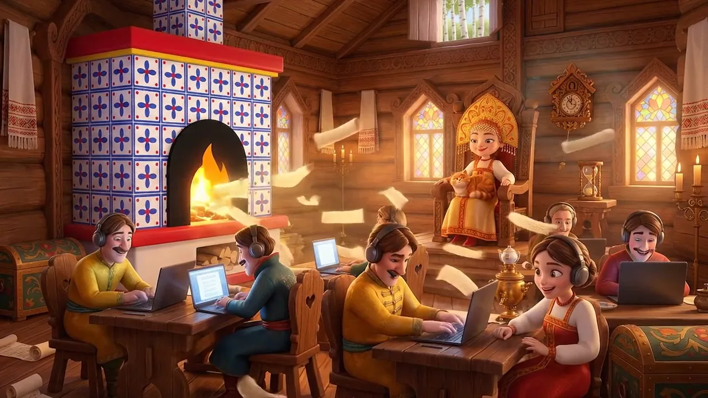
Отдел спокойно работает с печью · 119 с8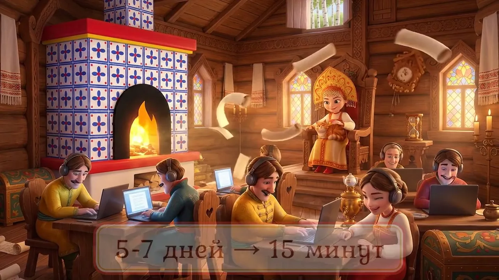
Менеджеры празднуют со свитками · 121 с
Последний экран: мудрец 210 вместо кота
Вырезать по контуру не вышло, ставлю фото в рамке.
М1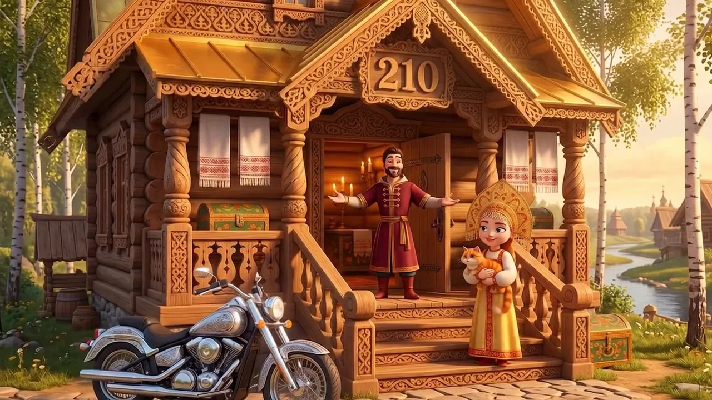
Кадр целиком: изба 210, мудрец, мотоциклМ2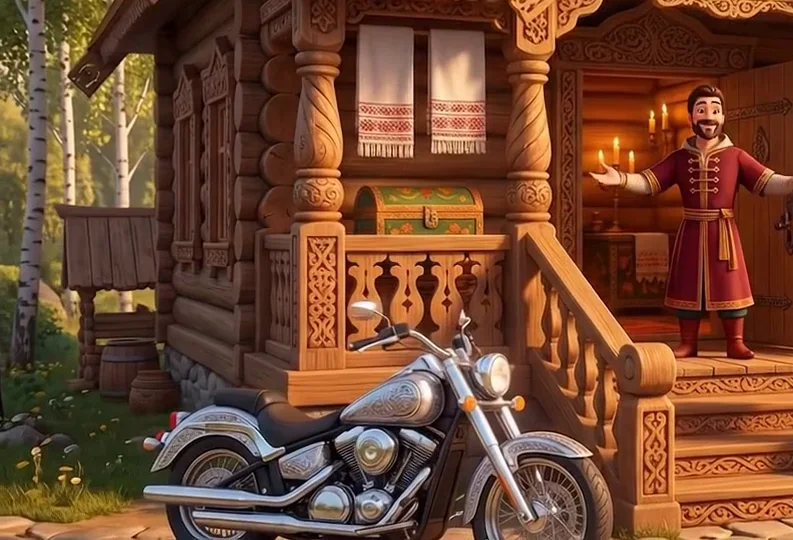
Мудрец с мотоциклом, крупнееМ3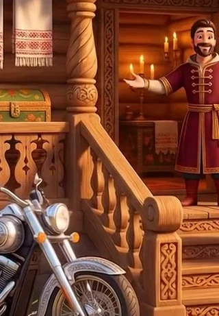
Мудрец крупно, по поясМ4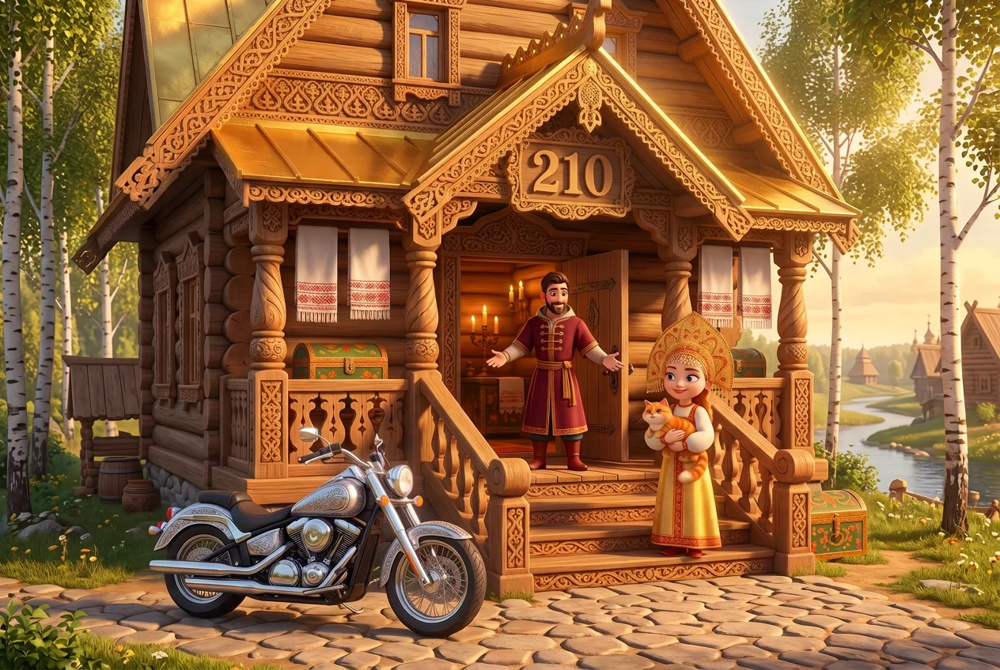
Утверждённая картинка сцены 210 (из раскадровки)